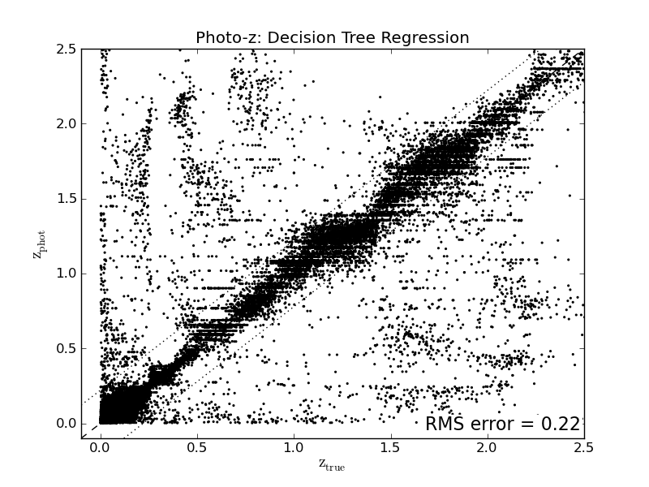

Script output:
0.221389887832
102798
1538
Python source code: plot_sdss_photoz.py
import urllib2
import numpy as np
import pylab as pl
from sklearn.datasets import get_data_home
from sklearn.tree import DecisionTreeRegressor
DATA_URL = ('http://www.astro.washington.edu/users/'
'vanderplas/pydata/sdss_photoz.npy')
LOCAL_FILE = 'sdss_photoz.npy'
def fetch_photoz_data(data_home=None):
data_home = get_data_home(data_home)
local_file = os.path.join(data_home, LOCAL_FILE)
if not os.path.exists(local_file):
# data directory is password protected so the public can't access it
password_mgr = urllib2.HTTPPasswordMgrWithDefaultRealm()
password_mgr.add_password(None, DATA_URL, 'pydata', 'astroML')
handler = urllib2.HTTPBasicAuthHandler(password_mgr)
opener = urllib2.build_opener(handler)
fhandle = opener.open(DATA_URL)
open(local_file, 'w').write(fhandle.read())
return np.load(local_file)
data = fetch_photoz_data()
N = len(data)
# put colors in a matrix
X = np.zeros((N, 4))
X[:, 0] = data['u'] - data['g']
X[:, 1] = data['g'] - data['r']
X[:, 2] = data['r'] - data['i']
X[:, 3] = data['i'] - data['z']
z = data['redshift']
# divide into training and testing data
Ntrain = 3 * N / 4
Xtrain = X[:Ntrain]
ztrain = z[:Ntrain]
Xtest = X[Ntrain:]
ztest = z[Ntrain:]
clf = DecisionTreeRegressor(max_depth=20)
clf.fit(Xtrain, ztrain)
zpred = clf.predict(Xtest)
axis_lim = np.array([-0.1, 2.5])
rms = np.sqrt(np.mean((ztest - zpred) ** 2))
print rms
print len(ztest)
print np.sum(abs(ztest - zpred) > 1)
ax = pl.axes()
pl.scatter(ztest, zpred, c='k', lw=0, s=4)
pl.plot(axis_lim, axis_lim, '--k')
pl.plot(axis_lim, axis_lim + rms, ':k')
pl.plot(axis_lim, axis_lim - rms, ':k')
pl.xlim(axis_lim)
pl.ylim(axis_lim)
pl.text(0.99, 0.02, "RMS error = %.2g" % rms,
ha='right', va='bottom', transform=ax.transAxes,
bbox=dict(ec='w', fc='w'), fontsize=16)
pl.title('Photo-z: Decision Tree Regression')
pl.xlabel(r'$\mathrm{z_{true}}$', fontsize=14)
pl.ylabel(r'$\mathrm{z_{phot}}$', fontsize=14)
pl.show()